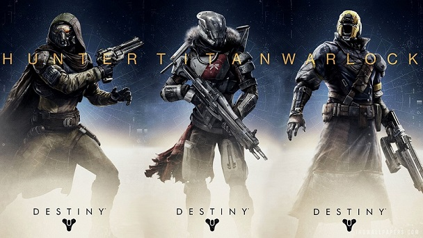

The audio you are hearing is from the Tower, which is the place that guardians hang out and take care of all matters of business.
There are 3 different types of Guardians that protect the citizens of the Last City: Hunters, Titans and Warlocks.
Hunters are accurate, agile and sneaky, providing support for their fireteam members.
Titans are large and heavy. They are capable of taking and dealing large amounts of damage to the enemies.
Warlocks are fast and powerful. They have abilities that are capable of dealing tremendous amounts of damage as well
as recovering quickly from enemy attacks.
Click on each of the types of Guardians below to take you to a Wiki page about them. From left to right: Hunter, Titan, Warlock.
